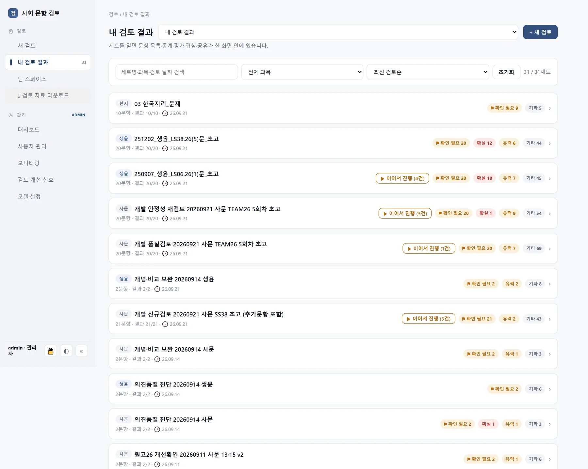
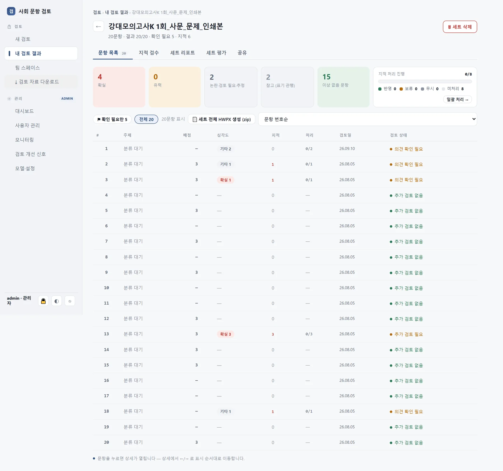
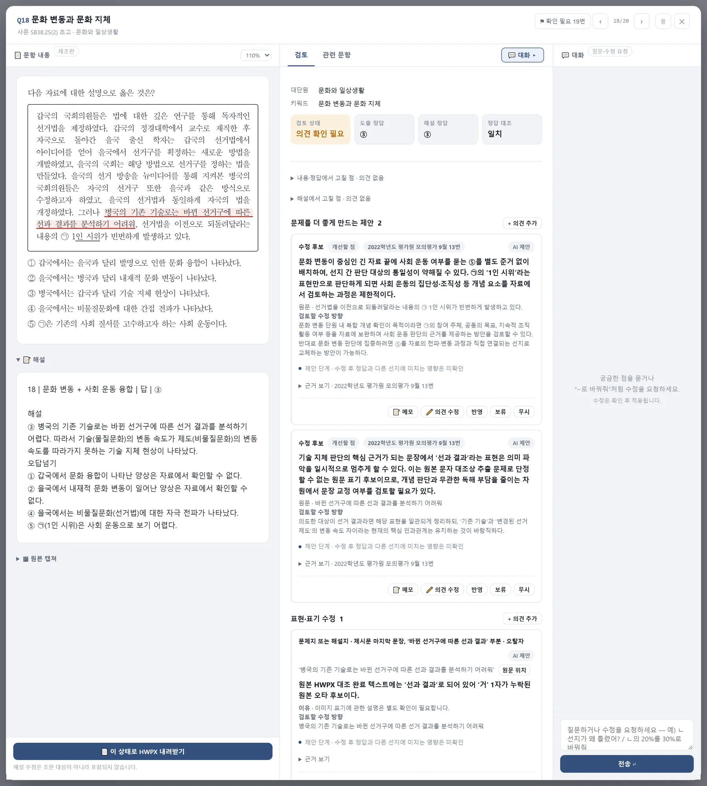
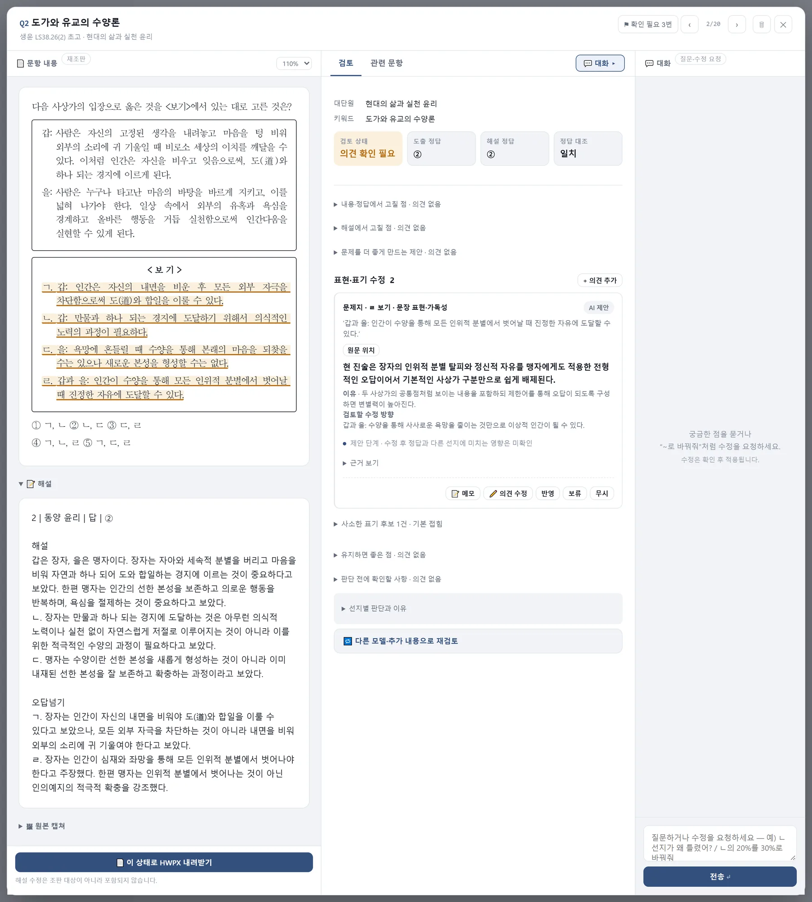
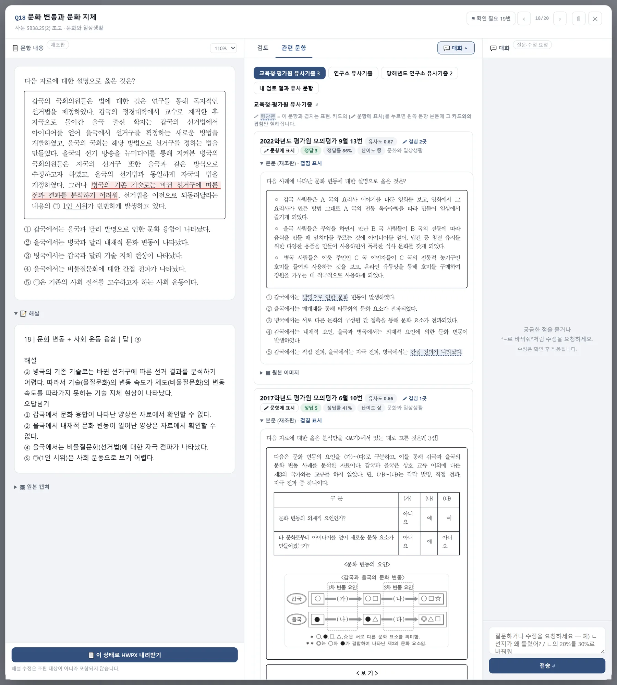
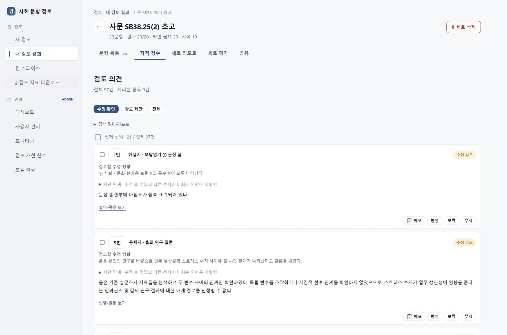
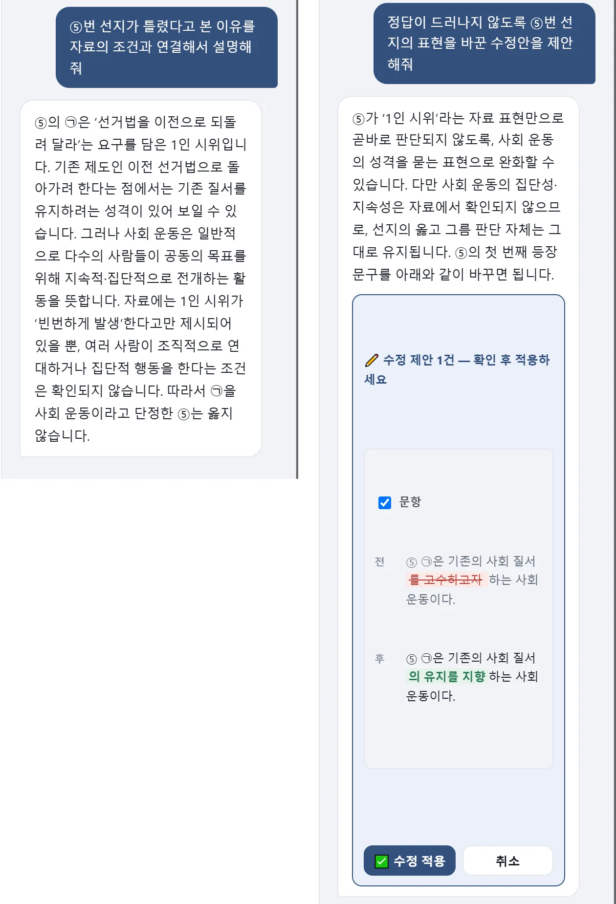
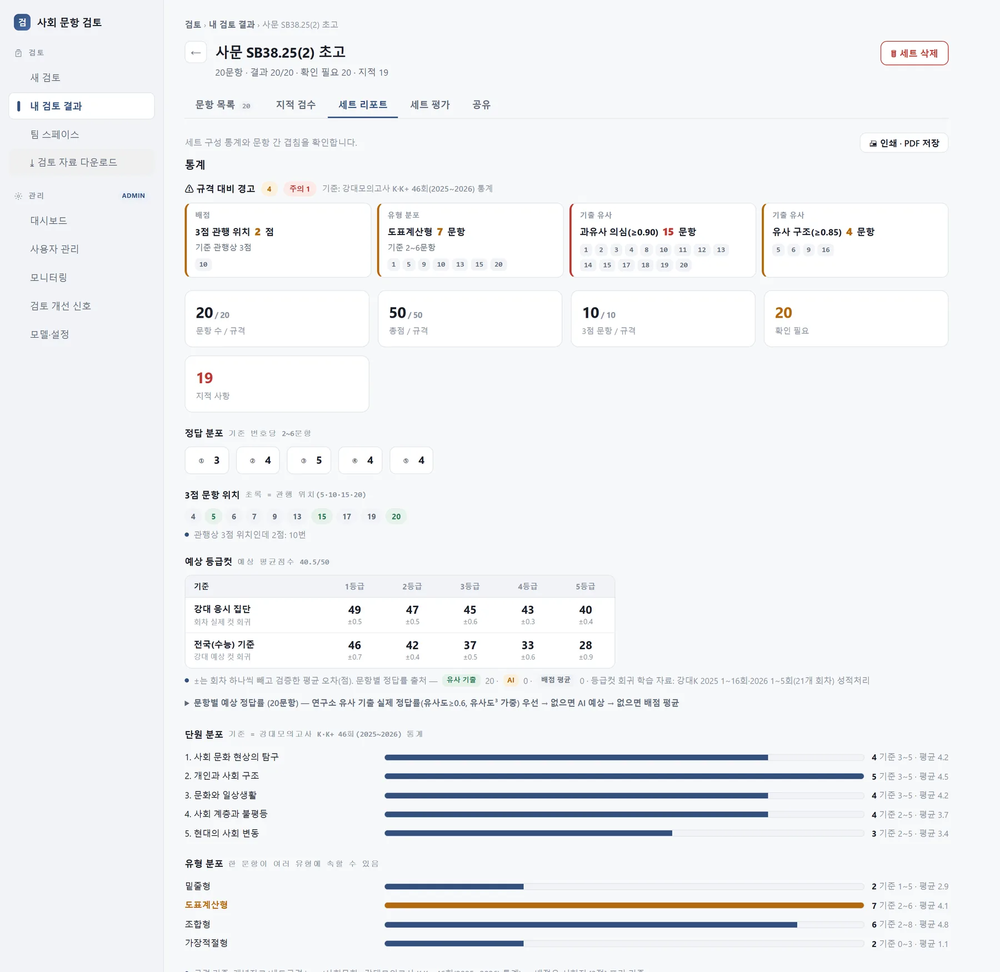
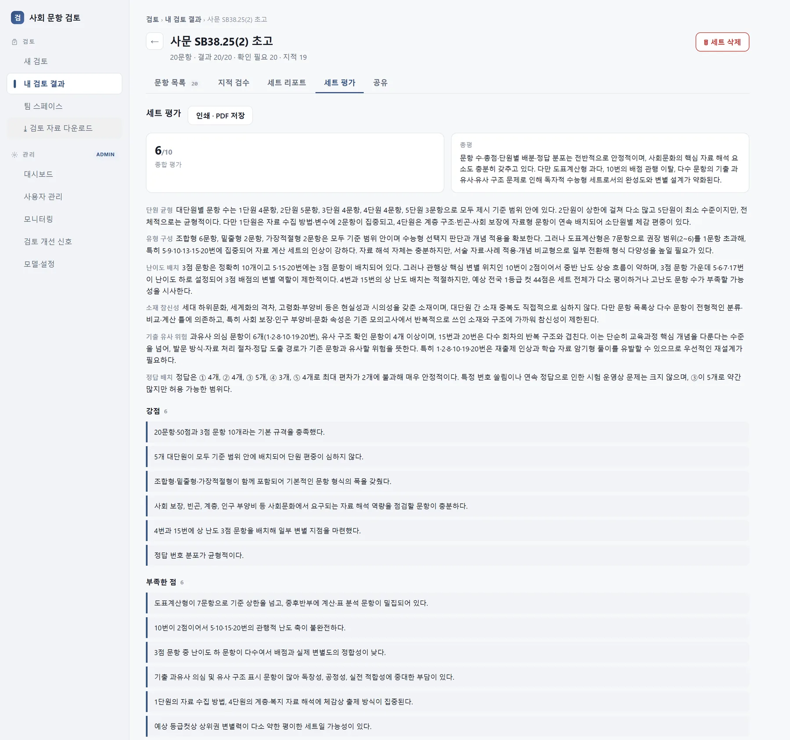

Review Agent
AI와 함께 문항 검토하기
문항은 출제에서 시행까지 여러 단계를 거칩니다. 출제자가 초고를 쓰고, 검토자가 내용과 근거를 확인하고, 수정본을 주고받고, 편집을 거쳐 인쇄본이 되고, 시행 뒤에는 정답률과 함께 기출 자료로 저장됩니다. 단계마다 보는 사람이 다르고 확인하는 내용도 다릅니다. 출제자는 자기 문항의 정답과 해설이 성립하는지, 비슷한 기출이 있는지를 먼저 확인합니다. 검토자는 개념 적용과 근거를, 편집 담당은 표기와 조판을, 세트를 맡은 사람은 구성과 난이도 배치를 봅니다. 시행 뒤에는 예상 정답률과 실제 정답률의 차이를 확인합니다.
지금까지 이 확인은 대부분 각자가 직접 찾아보고 기억에 의존해 해 왔습니다. 추출한 텍스트가 원본과 같은지, 몇 해 전 평가원 기출과 겹치는 발문 구조는 없는지, 3점 문항이 과거 회차에서 드물던 자리에 놓이지는 않았는지, 관련 개념이 교과서 어느 쪽에 어떻게 적혀 있는지는 판단 이전에 반복해서 확인하거나 찾아야 하는 것입니다. 여러 문항을 함께 보다 보면 이런 확인에 충분한 시간을 쓰기 어렵습니다.
Review Agent는 이 확인 작업을 맡습니다. 원고든 인쇄본이든 문항이 들어오면 먼저 풀어 보고, 교과서·EBS·기출에서 판단에 필요한 자료를 찾아 두고, 확인이 필요한 곳을 근거와 함께 표시합니다. 그리고 그 결과를 단계와 역할에 맞게 나누어 보여 줍니다. 판단은 사람이 하고, 도구는 판단에 필요한 재료를 모읍니다.
이 글에서는 설계 원칙, 단계별 화면, 과목마다 다른 부분, 향후 계획을 다룹니다.
1. 설계 원칙
검토를 돕는 도구를 만들면서 모델 선택과 함께, 어떤 정보를 언제 주고 결과를 어떻게 보여 줄지도 계속 조정했습니다. 같은 모델이라도 무엇을 먼저 보여 주고 무엇을 감추는지, 의견을 어디에 묶어 두는지, 모를 때 어떻게 말하게 하는지에 따라 결과의 쓸모가 달라졌습니다. 아래 원칙은 과목과 무관하게 적용됩니다.
1) 풀이와 자료 검색의 분리
초기 실험에서 원고·해설·참고 자료를 한 번에 주면, 모델은 해설의 오류 가능성을 따로 따지지 않고 그 논리를 따라가는 응답을 반복했습니다. 해설이 맞을 때는 문제가 없지만 해설이 틀렸을 때 그 사실이 드러나지 않았습니다.
그래서 세 가지를 분리했습니다. 독립 풀이는 해설과 정답을 보지 않고 문항만 풉니다. 자료 찾기는 풀이 결과를 보지 않고 문항의 단원·키워드로 교과서·EBS 연계 교재·기출·검토 질문은행에서 관련 구간을 찾습니다. 둘은 서로의 결과를 보지 않은 채 실행되고, 그 뒤 대조 단계가 풀이 결과·자료·원고·해설을 함께 비교합니다. 풀이가 자료를 먼저 보면 자료 쪽으로 기울고, 자료 찾기가 풀이를 먼저 보면 풀이에 맞는 자료만 고르는 일이 있었기 때문입니다. 최초 풀이의 답과 대조 뒤의 판단 후보는 따로 보존해, 어느 단계에서 근거와 판단이 달라졌는지 사람이 확인할 수 있게 했습니다.
2) 근거의 원문 구간 연결
"교과서에 따르면"으로 시작하는 의견은 확인할 수 없습니다. 어느 책 몇 쪽의 어느 문장인지가 있어야 열어 볼 수 있습니다.
그래서 검토에 들어가는 모든 텍스트에 구간 ID를 붙입니다. 원고의 문장, 해설의 문장, 외부 자료의 문단이 각각 ID를 가지며, 모델은 의견마다 어느 ID의 어느 문장을 근거로 삼았는지를 적어야 합니다. 코드는 그 인용문이 지정된 구간에 실제로 있는지, 제목이나 표제처럼 본문이 아닌 곳을 가리키지는 않았는지를 확인하고, 확인되지 않으면 근거를 다시 살펴봐야 하는 의견으로 표시합니다.
3) 근거 미확인 시 보류
정답에 영향을 주는 판단인데 근거가 확인되지 않으면 도구는 결론을 내지 않고 보류로 표시합니다. 독립 풀이의 답은 후보로만 보이고, 최종 판단은 사람이 기록합니다.
보류된 의견과 그때의 수정 후보는 지우지 않고 원본으로 보존합니다. 재검토나 추가 확인으로 보류가 풀리면 그 과정이 이력으로 남습니다. 도구가 만든 수정안도 검증을 거치기 전까지는 초안으로 표시되고, 사람이 확인하기 전에는 원고에 적용되지 않습니다.
4) 검토 내용을 바탕으로 한 대화
의견을 읽는 것으로 끝나지 않고, 그 의견을 두고 도구에게 되물을 수 있어야 합니다. 그래서 문항마다 대화창을 두되, 범용 질문창이 아니라 그 문항의 원고·해설·독립 풀이·근거 자료·확인 의견을 문맥으로 깔고 시작하는 대화로 만들었습니다. "②번 선지가 틀렸다고 본 이유를 문항의 조건과 연결해 설명해 줘"라고 물으면 도구는 자기가 근거로 삼은 조건과 인용 구간을 가리켜 답합니다. "이 의견을 반영해야 하는 이유가 뭐야"처럼 의견 자체를 따져 물을 수도 있습니다.
대화에서 나오는 요청은 두 가지로 구분합니다. 이유를 묻는 질문은 답으로 끝나고, "정답이 드러나지 않도록 이 표현의 수정안을 제안해 줘" 같은 수정 요청은 수정안을 만들어 보여 주되 원고에는 바로 적용하지 않습니다. 사람이 제안을 확인한 뒤에만 반영되고, 조건이나 선지를 바꾸는 수정이면 정답과 해설에 미치는 영향도 함께 확인하게 합니다. 대화의 결과는 그 문항의 검토 기록에 남아 다음 단계의 사람도 볼 수 있습니다.
5) 검토자 코멘트 활용
도구가 확인할 항목은 검토자의 실제 코멘트에서 가져왔습니다. 검토자가 원고에 남긴 코멘트를 회차별로 모아 검토 관점으로 정리했습니다. 사상가 귀속, 제시문 근거, 변별력, 자료의 평가 기능 같은 관점이 질문은행이 되어, 풀이와 근거 자료를 대조할 때 함께 확인할 항목으로 쓰입니다. 여러 회차에서 반복된 지적은 우선 확인할 관점으로 표시하고, 한 회차에만 나온 지적은 참고로 남깁니다. 질문은행은 과목별로 따로 두므로, 새 과목을 더할 때는 그 과목 검토자의 코멘트로 다시 만듭니다.
검토자가 실제로 지적했던 문항은 벤치마크로도 씁니다. 코드나 프롬프트를 바꿀 때마다 같은 문항으로 다시 시험해, 실제 검토 의견과 맞는 확인 후보를 냈는지와 근거 없는 수정 요구를 내지 않았는지를 따로 셉니다.
6) 세트 기준: 과거 회차 통계
3점 문항의 위치나 단원별 문항 수에는 정해진 답이 없습니다. 세트 리포트는 그 기준을 연구소 과거 회차 통계로 두고, 옳고 그름을 정하는 대신 과거와 다른 점을 표시합니다. 정답 번호 분포, 3점 문항 위치, 단원별·유형별 문항 수의 최소·최대·평균을 과거 회차에서 뽑아 과목별 참고 범위로 두고, 벗어난 것만 확인 후보로 올립니다.
예상 등급컷은 문항마다 유사 기출을 찾아 그 실측 정답률을 유사도로 가중해 모으고, 과거 회차 성적으로 학습한 회귀에 넣어 추정합니다. 유사 기출이 부족해 다른 추정값을 쓴 문항은 입력 근거를 구분해 표시합니다. 회차를 하나씩 빼고 검증한 오차 범위를 함께 보여 주지만 참고 추정치일 뿐이며, 응시 집단이 다른 값끼리 직접 비교하는 용도는 아닙니다. 시행이 끝난 인쇄본을 같은 흐름으로 등록하면 그 회차의 실제 정답률이 다음 추정의 재료가 됩니다.
기반 구성
이 도구는 kdsnr-ai의 기반 위에서 돕니다. 원고와 해설의 추출은 Pipeline API가 맡습니다. 유사 문항 검색은 Archive가 맡아 교육청·평가원·연구소 문항을 이미지와 글 양쪽으로 찾아 줍니다. 모델 호출은 Proxy를 거쳐 사용량이 기록됩니다. 검토 도구가 직접 가진 것은 과목별 교과서·EBS 개념 DB, 질문은행, 세트 구성의 참고 범위, 그리고 위의 대조 규칙입니다.
2. 단계별 화면
같은 분석 결과라도 누가 어느 단계에서 보느냐에 따라 필요한 부분이 다릅니다. 그 차이에 맞게 사용 단계에 따라 구성을 달리하였습니다.
| 단계 | 보는 사람 | 먼저 보게 되는 것 |
|---|---|---|
| 초고 작성 뒤 | 출제자 | 독립 풀이의 답과 해설의 답이 같은지, 비슷한 기출이 있는지 |
| 내용 검토 | 검토자 | 확인 포인트와 그 근거, 보류된 판단, 자신의 판단 기록 |
| 표기·편집 | 편집 담당 | 표현·표기 묶음, 추출 결과와 원본의 차이, 수정 반영본 |
| 세트 구성 | 세트 담당 | 정답 분포·배점·단원·유형의 참고 범위 대비, 예상 등급컷, 세트 평가 |
| 시행 뒤 | 분석 담당 | 인쇄본 등록으로 쌓이는 기출 자료와 실제 정답률 |
아래 화면은 사회탐구 초고로 돌린 사례입니다. 구조는 과목과 무관합니다.
1) 세트 목록
도구의 분석이 끝난 세트는 목록에 쌓입니다. 세트마다 확인이 필요한 문항 수와 의견의 확인 우선순위가 표시되어, 어느 세트의 어느 문항부터 열어 볼지 정할 수 있습니다.

세트 안에서는 근거가 연결된 의견이 있는 문항, 근거를 더 확인해야 하는 문항, 도구가 별도 의견을 내지 않은 문항이 구분됩니다. 이 구분은 검토 순서를 정하는 참고 정보이며, 별도 의견이 없는 문항도 검토 대상에서 빠지지 않습니다.

2) 문항 확인 포인트
문항 화면에서는 원고·해설과 도구의 확인 의견을 함께 봅니다. 맨 위에 검토 상태 · 도출 정답 · 해설 정답 · 정답 대조를 나란히 두어, 해설을 보지 않고 푼 답과 해설의 답이 같은지와 그 근거를 이어서 살필 수 있게 했습니다.
아래는 사회·문화 초고의 18번입니다. 독립 풀이의 답은 해설의 답과 일치했습니다. 화면에 표시된 의견 가운데 추출 결과 확인과 참고 기출 제안을 하나씩 살펴보겠습니다.

- 추출 결과 확인 — 추출된 텍스트에는 "선과 결과"로 되어 있었지만 원본 HWPX에는 "선거 결과"로 적혀 있었습니다. 원고의 오탈자가 아니라 추출 과정에서 글자가 빠진 사례로, 검토에 쓰는 텍스트를 원본에 맞춰 바로잡아야 하는 항목입니다. 긴 자료에서는 문맥으로 보완해 읽기 쉬운 차이라 도구가 먼저 표시합니다.
- 참고 기출 — 문화 변동을 묻는 긴 자료 끝에 사회 운동 여부를 묻는 ⑤가 별도 준거 없이 놓여 선지 간 판단 대상이 달라질 수 있다는 의견과 함께, 비교할 자료로 2022학년도 9월 모의평가 사회·문화 13번을 제시했습니다. 검토자는 두 문항의 자료와 선지 구성을 나란히 보고 이 의견을 받아들일지 판단합니다. 비교할 기출은 도구가 미리 찾아 둡니다.
확인 포인트는 내용·정답과 해설 / 문제를 더 좋게 만드는 제안 / 표현·표기의 세 묶음으로 나뉩니다. 정답이나 해설의 오류 가능성, 문항 구성에 대한 제안, 편집 단계에서 다룰 표기를 구분해 볼 수 있도록 한 것입니다. 모든 문항에 모든 종류의 의견이 나오지는 않으며, 정답에 영향을 주는 근거가 확인되지 않으면 도구는 단정하지 않고 보류로 남겨 사람에게 넘깁니다.
생활과 윤리에서는 사상가 귀속이 주된 확인 대상입니다. 아래 2번에서는 도구가 정답·해설에 관한 추가 확인 사항을 내지 않았습니다. 대신 〈보기〉 ㄹ이 장자의 입장을 맹자에게도 적용한 전형적 오답이라 사상가 구분만으로 쉽게 배제될 수 있다는 의견을 남겼습니다. 검토자는 이 의견을 참고해 해당 보기가 출제 의도대로 기능하는지 살펴볼 수 있습니다.

3) 유사 문항
비슷한 문항을 본 기억이 있어도 그 문항을 실제로 찾는 데는 시간이 듭니다. '관련 문항' 탭은 Archive에서 찾은 유사 문항을 교육청·평가원 기출, 연구소 기출, 당해년도 연구소 기출로 나누어 미리 올려 둡니다. 유사도와 겹치는 표현의 위치가 함께 나와, 두 문항의 소재·발문·선지 구조를 비교할 수 있습니다. 유사도는 비교할 문항을 고르는 참고 정보이고, 중복 여부는 실제 내용을 보고 판단합니다. 출제자가 초고 단계에서 중복을 피하려 할 때와 검토자가 과유사를 가릴 때 같은 화면을 씁니다.

4) 판단 기록
사람의 반영 여부와 메모는 AI 의견과 구분해 남깁니다. 재검토할 때 도구가 처음 낸 의견과 사람이 내린 판단을 함께 확인하기 위해서이고, 다음 단계의 사람이 앞 단계에서 무엇이 결정됐는지 볼 수 있게 하기 위해서이기도 합니다. 세트 전체의 의견은 한 화면에서 훑으며 처리할 수도 있습니다.

5) 대화
오른쪽 대화창은 1절 4)의 대화가 열리는 자리입니다. 아래 왼쪽은 "⑤번 선지가 틀렸다고 본 이유를 자료의 조건과 연결해서 설명해 줘"라고 물은 장면입니다. 도구는 자료에 '1인 시위가 빈번하게 발생'한다고만 되어 있을 뿐 조직적·집단적 행동이라는 조건은 확인되지 않는다는 점을 들어 답합니다. 오른쪽은 "정답이 드러나지 않도록 ⑤번 선지의 표현을 바꾼 수정안을 제안해 줘"라고 요청한 장면입니다. 도구는 선지의 옳고 그름은 그대로 두면서 표현만 완화한 수정안을 전·후로 보여 주고, 사람이 '수정 적용'을 누르기 전에는 원고에 반영하지 않습니다. 적용한 수정은 문항 원고에 바로 반영되며, 그 상태의 문항을 HWPX로 내려받아 편집 단계로 넘길 수 있습니다.

6) 세트 리포트와 세트 평가
문항을 하나씩 볼 때는 보이지 않는 것이 있습니다. 정답 번호가 한쪽으로 쏠렸는지, 3점 문항이 과거 회차에서 드물던 자리에 있는지, 특정 유형이 참고 범위보다 많은지, 기출과 지나치게 닮은 문항이 몇 개나 되는지는 세트 단위로 비교해야 드러납니다. 세트 리포트는 연구소 과거 회차 통계를 기준으로 참고 범위를 벗어난 것을 먼저 보여 줍니다.

예상 등급컷은 문항마다 유사 기출의 실측 정답률을 모아 추정합니다. 연구소 응시 집단 기준과 전국 수능 기준을 함께 보여 주며, 회차를 하나씩 빼고 검증한 오차가 붙습니다. 시행 전에 난이도를 가늠하는 참고값입니다.
세트 평가는 같은 자료를 바탕으로 강점·부족한 점·개선 제안을 문장으로 정리합니다. 점수는 논의의 출발점일 뿐 세트의 질을 판정하는 값이 아닙니다. 단원 균형, 유형 구성, 난이도 배치, 소재 참신성, 기출과의 유사성, 정답 배치를 항목별로 짚어, 세트 회의에서 논의할 항목을 미리 정리합니다.

3. 과목마다 다른 부분
위의 구조는 과목을 가리지 않습니다. 과목을 하나 더할 때 준비하는 것은 네 가지입니다. 그 과목의 근거 자료(교과서·연계 교재·성취기준·기출), 그 과목 검토자의 코멘트로 만든 질문은행, 과거 회차 통계로 뽑은 세트 참고 범위, 그리고 필요하다면 지도·그래프·수식처럼 글로 읽히지 않는 것을 읽는 과목 전용 판독입니다. 풀이·자료 찾기·대조·보류·판단 기록의 틀은 그대로입니다.
지금까지 적용한 영역에서는 이 네 가지가 다음처럼 달랐습니다. 한 영역의 확인 규칙을 다른 영역에 그대로 옮기지는 않습니다.
| 영역 | 과목 | 먼저 짚어 두는 것 | 찾아 두는 자료 |
|---|---|---|---|
| 사회 | 사회·문화, 생활과 윤리, 한국지리, 세계지리 | 개념 적용과 정답·해설의 근거, 자료·선지의 평가 기능, 교육과정 범위, 기출 과유사 | 교과서, EBS 연계 교재, 성취기준, 연구소 기출, Archive 유사 문항 |
| 과학 | 통합과학, 물리학, 화학, 생명과학, 지구과학 | 오류·오타와 조건의 일관성(단위·부호), 통합과학은 성취코드·행동영역 분류 | 기출 DB, 분류 기준표, 사람이 분류한 평가용 문항 |
| 국어 | 독서, 문학, 화법과 작문, 언어와 매체 | 문항별 영역 판별 뒤 오류·오탈자, 지문과 문항의 정합성, 시험지 안 문항 겹침(중복 출제) | 지문 원문, 해설, 같은 세트의 다른 문항 |
4. 향후 계획
- 과목 확장. 과목마다 검토자가 무엇을 확인하고 싶어 하는지를 먼저 파악하고, 그에 맞는 검토 내용이 나오도록 구성할 예정입니다. 어떤 자료를 근거로 삼을지, 어떤 지적을 우선 올릴지, 세트에서 무엇을 비교할지를 과목별 필요에 따라 다르게 둡니다. 가장 가까운 대상은 2028학년도 수능 체제의 통합사회입니다. 기존 선택과목 자료를 지리·일반사회·윤리 영역으로 나누어 개념 근거로 쓰고, 교육과정 범위는 통합사회 성취기준에 비추어 살피며, 여러 영역의 개념이 함께 나오는 문항에서는 영역별 자료를 한꺼번에 찾아 두는 방식을 준비하고 있습니다.
- 흐름 통합. 과목마다 다른 검토 내용은 유지하면서, 원고를 올리고 결과를 확인하는 과정은 한 화면에서 이어지도록 정리합니다. 사회에서 개선한 세트 검색, 의견 배치, 판단 기록 방식도 다른 과목에 같이 적용합니다.
5. 마무리
Review Agent가 하는 일은 문항이 지나가는 단계마다 확인이 필요한 부분을 먼저 찾아내고, 판단에 필요한 자료를 모아, 근거와 함께 건네는 것입니다.
이 도구는 사람을 대체하지 않습니다. 사람이 놓칠 수 있는 부분을 받쳐 주고, 반복해서 확인해야 하는 일을 대신 맡아, 각 단계의 사람이 좋은 문항을 만들고 검토하는 데 시간을 쓸 수 있도록 돕는 것이 이 도구의 역할입니다.